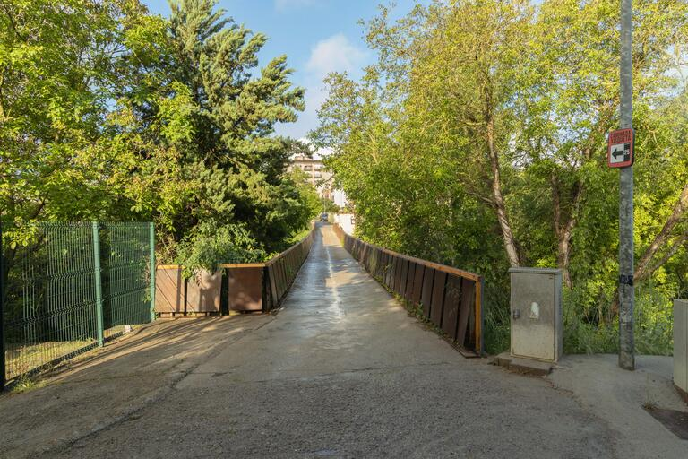

Visita · Tremp
El Pont de Sant Jaume és un dels elements patrimonials més característics de Tremp. Construït al segle XV i remodelat a inicis del segle XVIII, aquest pont de pedra de quatre arcs salva el barranc…